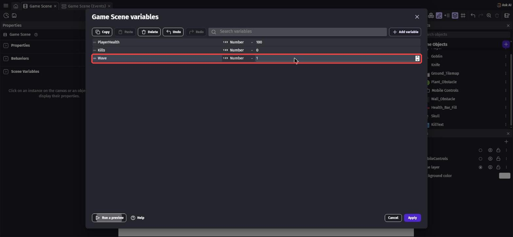
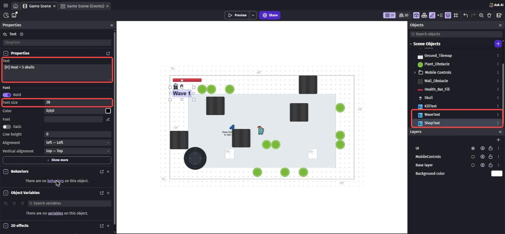
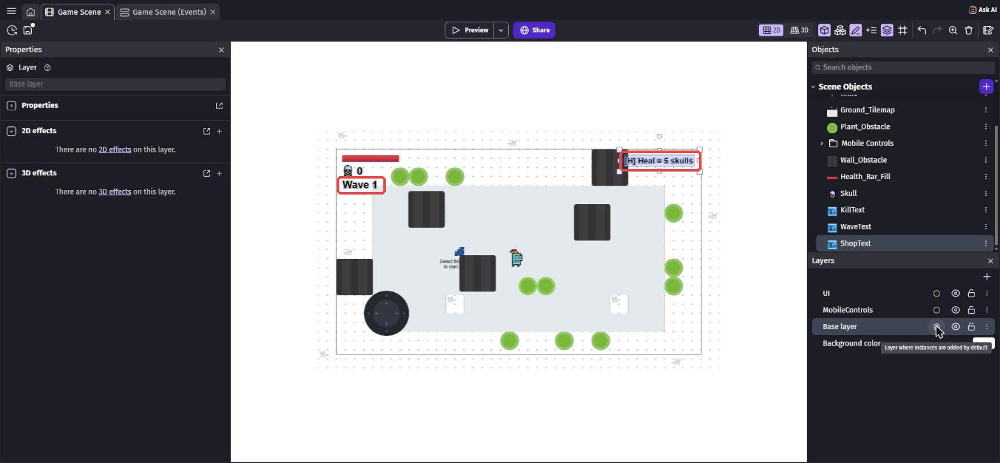
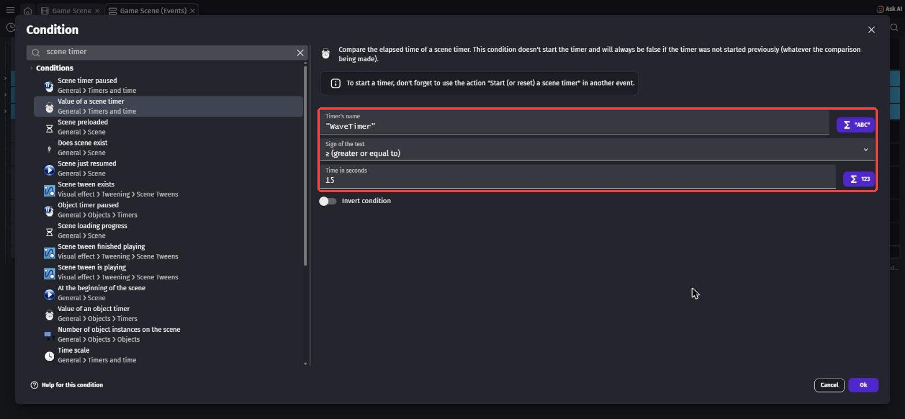
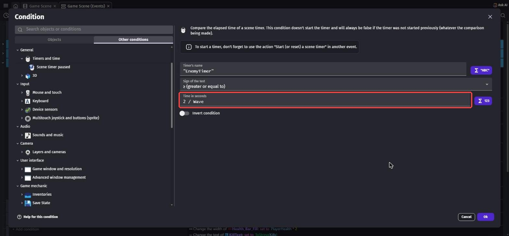
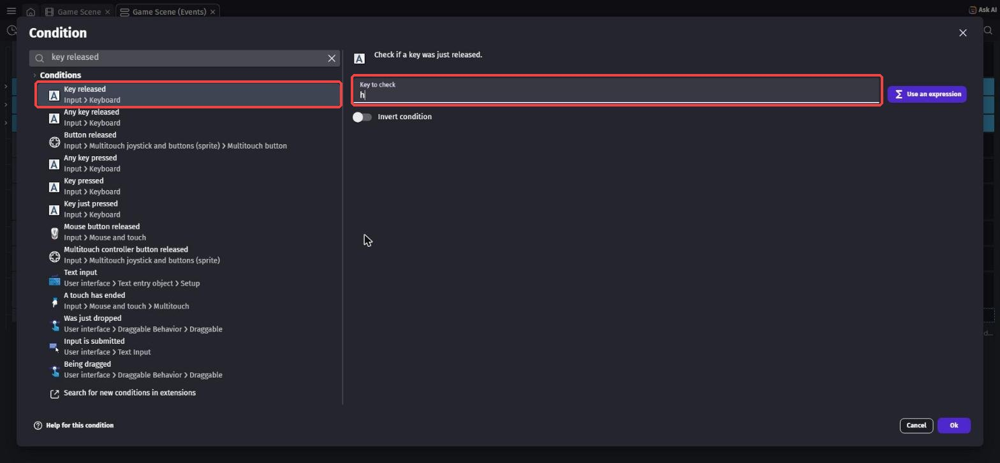
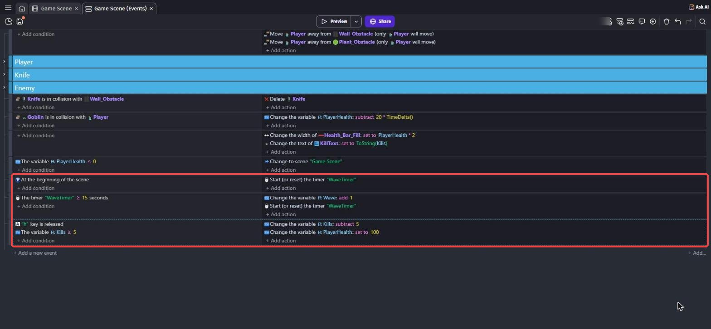
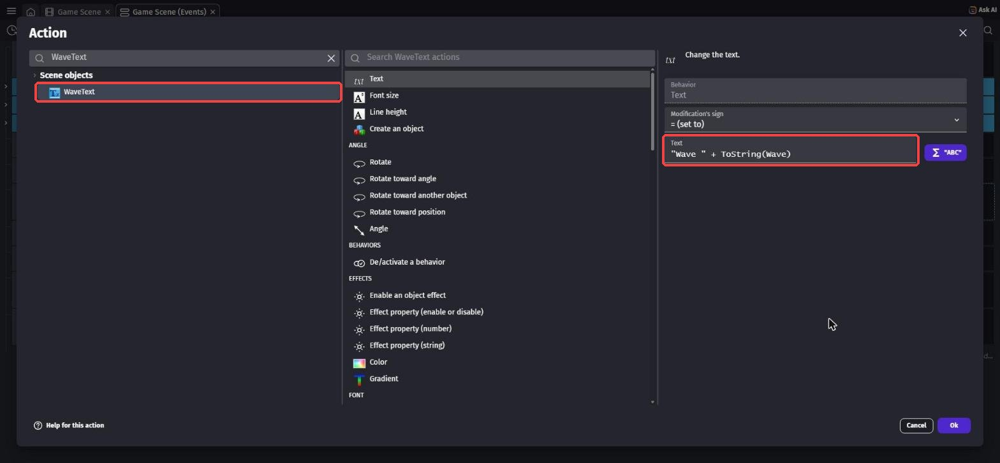
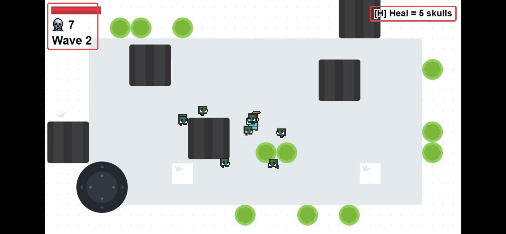

ウェーブとショップ
🎯 この章でできるようになること
- タイマーと変数で、時間がたつほどむずかしくなるしくみを作れる
- 式の中で変数を使って、数をかえられる
- キーを押したときの条件で、ショップ（買い物）を作れる
5-1. この章で作るしくみ
ローグライクのゲームでは、時間がたつほど敵が強く（多く）なっていきます。
このまとまりを「ウェーブ」（波）とよびます。
かわりに、倒した敵のドクロを使って回復できる「ショップ」を作ります。
タイマーをリセット
ドクロが5こ以上
体力を100にもどす
5-2. 変数と文字を用意しよう
第4章と同じように Scene Variables を開き、Wave（今のウェーブ）を作ります。
型は Number、値は 1。

Wave = 1（赤枠）一覧の KillText の「⋮」から「Duplicate」（コピーを作る）を選び、名前を WaveText にします。
もう1回 Duplicate して、ShopText も作ります。
WaveText をクリックして、左の Text を Wave 1 にします。
ShopText をクリックして、左の Text を [H] Heal = 5 skulls（Hキーで回復、ドクロ5こ）、Font size を 28 にします。

Layers で UI の丸いボタンを選んでから、「⋮」→「Add instance to the scene」で2つを置きます。
WaveText は X 20、Y 100。
ShopText は X 1010、Y 20（右上）。
置き終わったら Base layer の丸いボタンにもどそう。

5-3. ウェーブを作ろう
イベントシートのいちばん下に、「At the beginning of the scene」のイベントを作り、「Start (or reset) a scene timer」で "WaveTimer" をスタートします。
次のイベントの条件は「Value of a scene timer」で "WaveTimer"、Sign は「≥」、Time は 15。
アクションは2つです。
- 「Change variable value」で
Waveを「+ (add)」で1 - 「Start (or reset) a scene timer」で
"WaveTimer"

Enemy グループを開き、「The timer "EnemyTimer" ≥ 2 seconds」の条件をダブルクリックします。
Time の 2 のうしろに / Wave を足して、2 / Wave にします。
ウェーブ1は2秒ごと、ウェーブ2は1秒ごと、ウェーブ4は0.5秒ごとにゴブリンが出てきます。

2 / Wave に（赤枠）5-4. ショップを作ろう
回復するとドクロの数がへるけど、それでOKです。
新しいイベントを作り、条件を2つ入れます。
key releasedで検索 →「Key released」、Key は一覧からh- 「Variable value」で
Killsが「≥」5

h（赤枠）アクションは2つです。
- 「Change variable value」で
Killsを「- (subtract)」で5 - 「Change variable value」で
PlayerHealthを「= (set to)」で100

ショップでそれを使うと、1回押しただけでドクロが何回も使われてしまいます。
「Key released」は、キーをはなした1回だけ動くので、買い物にぴったりです。
5-5. ウェーブの数を画面に出そう
第4章で作った「条件のないイベント」（体力バーと KillText を変えるもの）に、アクションを足します。
左の一覧で WaveText を選び、「Text」で下の式を入れます。
"Wave " + ToString(Wave)
Wave が 3 なら「Wave 3」と表示されます。
"Wave " のうしろのスペースを忘れると「Wave3」になります。
15秒ごとに左上の「Wave」がふえて、ゴブリンがどんどん早く出てきます。
ドクロが5こ以上たまったら、H キーを押してみよう。
ドクロが5へって、体力バーがいっぱいにもどります。

💪 やってみよう
ショップの商品をふやしてみよう。
たとえば「J キー：ドクロ3こで、ナイフが速くなる」など。
ヒント
シーン変数 KnifeSpeed（値は 600）を作り、第1章のナイフの Speed を KnifeSpeed にします。
J キーのイベントで、Kills を 3 へらして、KnifeSpeed に 200 足せばOK。
ShopText にも、新しい商品の説明を書き足そう。
5-6. 🚨 つまずきポイント集
Wave がふえない
原因: "WaveTimer" をスタートするイベントがない、または名前がちがう。
直し方: 「At the beginning of the scene」で "WaveTimer" をスタートしているか確かめよう。
H キーを押しても何も起きない
原因: ドクロが5こたまっていない、または先にゲーム画面をクリックしていない。
直し方: ゲームの画面を1回クリックしてから、ドクロが5こ以上のときに押そう。
ゴブリンが出すぎてすぐ負ける
原因: ウェーブがどんどん進んで、0.2秒ごとなどになっている。
直し方: ウェーブの間かく（15秒）を長くするか、2 / Wave を 3 / Wave にしてみよう。
5-7. ✅ チェックリスト
全部チェックできたら第5章クリア！
🎉 次回は最終回！
音や色で仕上げて、みんなに発表しよう。